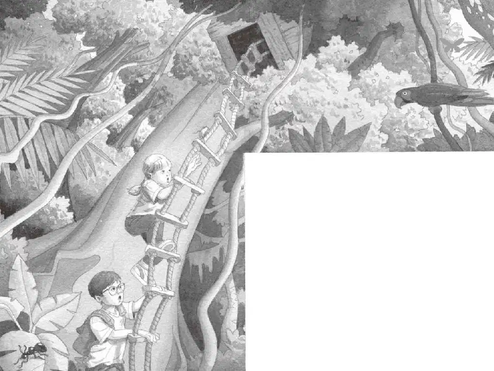

“等一等……”杰克上气不接下气地说，“我想我们已经逃出来了。”
杰克和安妮停了下来，大口喘气。
“我们在哪儿呢？”杰克问。
“那只小猴子呢？”安妮说着，扭头朝森林里张望，“你说，母美洲虎抓到它了没？”
“没有，小猴子动作那么敏捷。”杰克说。
“当然啦，母美洲虎也很敏捷。”杰克想。但是他不想告诉安妮这些。
“我希望它没事。”安妮说。
“吱吱。”花生米从安妮的口袋里探出头来。
“花生米！我差点儿把你忘记了！”安妮说，“你还好吗？”
小老鼠只是睁着它那双大眼睛看着安妮。
“它好像吓坏了，”杰克说，“可怜的花生米。”
“可怜的小猴子。”安妮说。她朝森林里张望着。
“我们最好在书里查查看。”杰克说。
他掏出那本书，在书页之间翻找，寻求帮助。
他翻到一幅图片时停了下来，图片上是一只非常吓人的动物。
“哦，天哪，这是什么？”他说。
杰克将图片下面的文字说明读了出来：
吸血蝙蝠生活在亚马孙热带雨林。夜晚，它们会悄无声息地叮咬受害者，吸食受害者的血。
“吸血蝙蝠？”杰克说。他感到脑袋有点儿发晕。
“吸血蝙蝠？”安妮说。
杰克点点头补充道：“天黑以后……”
安妮和杰克环顾四周。热带雨林似乎变得更加昏暗了。
“哎呀。”安妮看着杰克说，“也许我们应该回家了。”
杰克点点头。这是他第一次同意安妮的话。
“可是我们的任务怎么办？”安妮问，“仙女摩根怎么办？”
“我们还会回来的，”杰克说，“必须做好准备再来。”
“那我们是明天回来吗？”安妮问。
“是的。好了，树屋在哪个方向？”杰克问。
“这边。”安妮用手指着说道。
“是在那边。”杰克指着相反的方向说。
他们互相看着对方。“我们迷路了。”两人同时说道。
“吱吱。”
“别担心，花生米。”安妮说着又开始轻轻地拍着小老鼠。可是紧接着，她停住了。
“杰克，我觉得花生米是想帮我们。”安妮说。
“怎么帮？”杰克问。
“它在忍者时代就是这么帮我们的……”安妮说着把小老鼠放在落满树叶的地面上，“花生米，带我们去树屋吧。”
小老鼠立刻出发了。
“它要去哪儿？”安妮说，“我看不见它了！”
“那儿！”杰克说。他指着地上沙沙作响的树叶。
“没错，在那儿！”安妮说。
杰克和安妮跟着移动的树叶往前走。褐白相间的小身影一会儿出现，一会儿又消失了。
突然，杰克停住了脚步。
森林的地面一片寂静，看不见小老鼠的踪影。
“它在哪儿呢？”杰克问。
他使劲盯着地面。
“杰克！”安妮叫道。
杰克扭头一看。安妮站在不远处的一棵树旁边，用手指着上面。
杰克抬头望去。
树屋。
“哎呀！”杰克轻声说道。
“它又救了我们。”安妮说，“快看！它正顺着绳梯往上跑呢。”
安妮指着绳梯。

小老鼠正顺着绳梯一侧嗖嗖地往上爬。
“我们上去吧。”杰克说。
安妮开始往绳梯上爬，杰克紧随其后。
他们跟着小老鼠，一直爬到了热带雨林的树冠层上。